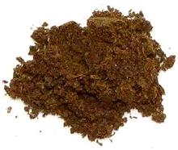

 |
Banga Soup SeasoningNigeria | ||||
| Makes: Effort: Sched: DoAhead: |
1 T * 10 Yes |
While this seasoning is necessary to make the famous Banga Soup (Palm Fruit Soup) of the Nigerian Delta region, it is difficult to make an authentic version in North America. | |||
| Many of the ingredients have now been identified, but some remain mysterious. Various of them, and some mixes, can be had on-line (see Seasoning Mixes). I have seen recent Banga Soup recipes that leave out all except the Beletientien Leaves or a substitute. | |||||
|
1 1 1 1 2 1 2 |
t t T T T T |
Traditional Ataiko Seeds (1) Irugege Seeds (2) Aridan Fruit (3) Oburunbebe Stick (4) Beletientien (5) Practical Banga Seasoning (6) Beletientien subst. (5) |
Proportions given here are approximate as they are variable in practice. The amounts given should do for a 14 ounce (400 gram) can of Palm Fruit Concentrate.
|